Chapter 7 Quantum Computing with Qiskit

Qiskit is an open-source SDK for working with quantum computers at the level of extended quantum circuits, operators, and primitives.
You can find more details in the following PDF file:
Installing Qiskit and Required Packages
Install Qiskit with Visualization Capabilities
# Uncomment and run the following line to install Qiskit with visualization capabilities
# !pip install qiskit[visualization]Check Qiskit Version
Install Additional Required Packages
# Uncomment the following lines to install other required packages
# %pip install qiskit_aer
# %pip install qiskit_ibm_runtime
# %pip install matplotlib
# %pip install qiskit-transpiler-serviceSetting Up the IBM Quantum Environment
Create an account on IBM Quantum and retrieve your API token.
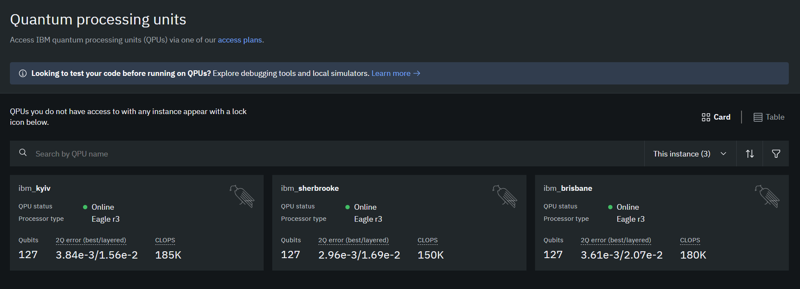
Configuring the Environment
from qiskit_ibm_runtime import QiskitRuntimeService
# Initialize the service with your IBM Quantum token
#service = QiskitRuntimeService(
# channel="ibm_quantum",
# token="YourActualTokenHere" # Replace with your actual token
#)
service = QiskitRuntimeService(channel="ibm_quantum",token = "33")
# Access a specific backend
backend = service.backend(name='ibm_brisbane')
print(f"Backend name: {backend.name}")
print(f"Number of qubits: {backend.num_qubits}")Let’s try to make the follwing circuits in qiskit.
Example 7.1 .
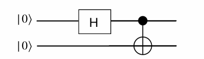
#Importing QuantumCircuit from qiskit
from qiskit import QuantumCircuit
# Setting the number of qubits
qc=QuantumCircuit(2)
# Importing necessary packages to simulate results
# Designing the circuit by adding Gates and Measurements
qc.h(0)
qc.cx(0,1)
qc.measure_all()
qc.draw(output='mpl')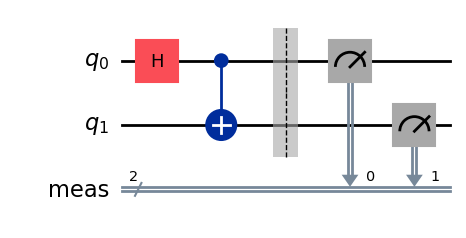
from qiskit import transpile
from qiskit_aer import AerSimulator
backend = AerSimulator()
transpiled_qc = transpile(qc, backend)
job = backend.run(transpiled_qc, shots=100) # Shots: Numbers of times the algorithm is run and measured
counts = job.result().get_counts()
print(counts)
# Plotting the results from the simulations
from qiskit.visualization import plot_histogram
plot_histogram(counts)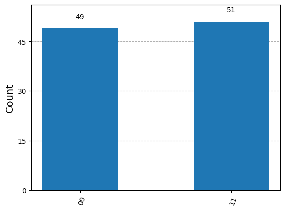
We can verify this result by 3.3.
Example 7.2 .
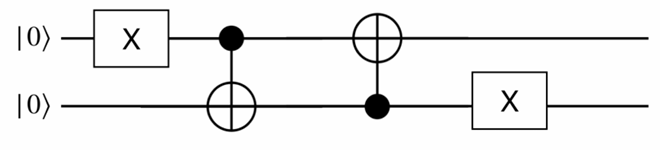
qc2=QuantumCircuit(2)
qc2.x(0)
qc2.cx(0,1)
qc2.cx(1,0)
qc2.x(1)
qc2.measure_all()
qc2.draw(output='mpl')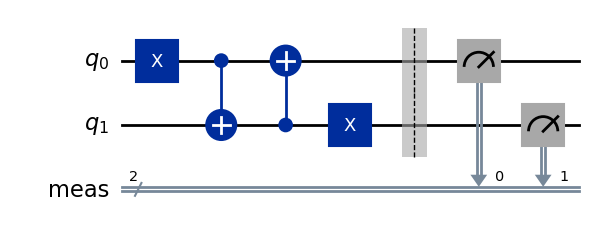
# Importing necessary packages to simulate results
from qiskit import transpile
from qiskit_aer import AerSimulator
backend = AerSimulator()
transpiled_qc2 = transpile(qc2, backend)
job = backend.run(transpiled_qc2, shots=100) # Shots: Numbers of times the algorithm is run and measured
counts = job.result().get_counts()
print(counts)
from qiskit.visualization import plot_histogram
plot_histogram(counts)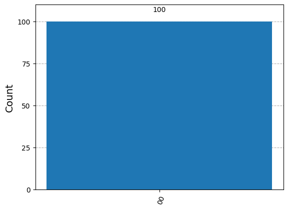
We can verify this result by exercise 3.4
Example 7.3 .
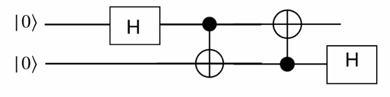
qc3=QuantumCircuit(2)
qc3.h(0)
qc3.cx(0,1)
qc3.cx(1,0)
qc3.h(1)
qc3.measure_all()
qc3.draw(output='mpl')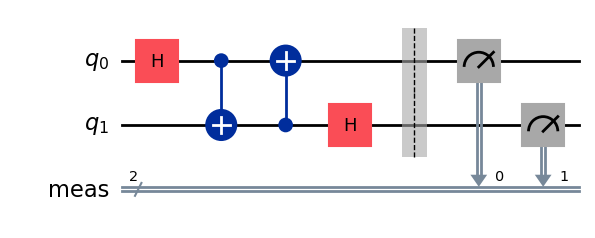
# Importing necessary packages to simulate results
from qiskit import transpile
from qiskit_aer import AerSimulator
backend = AerSimulator()
transpiled_qc3 = transpile(qc3, backend)
job = backend.run(transpiled_qc3, shots=100) # Shots: Numbers of times the algorithm is run and measured
counts = job.result().get_counts()
print(counts)
from qiskit.visualization import plot_histogram
plot_histogram(counts)We can verify this result by exercise 3.5
Example 7.4 The circuit implementation of QFT on 4 qubits

from qiskit import QuantumCircuit
import numpy as np
def controlled_rotation(qc, control, target, k):
"""
Adds a controlled rotation gate R_k to the quantum circuit.
Parameters:
qc (QuantumCircuit): The quantum circuit to which the gate is applied.
control (int): The control qubit index.
target (int): The target qubit index.
k (int): The exponent determining the angle of rotation (2π / 2^k).
"""
# Calculate the rotation angle (2π divided by 2^k)
angle = 2 * np.pi / (2 ** k)
# Apply the controlled-phase gate (controlled-R_k)
qc.cp(angle, control, target)
# Create a 4-qubit quantum circuit
qcF = QuantumCircuit(4)
# Apply a Hadamard gate to qubit 0 to create a superposition
qcF.h(0) # Hadamard gate on qubit 0
# Apply controlled rotations with qubit 0 as the target
controlled_rotation(qcF, control=1, target=0, k=2) # Controlled R_2 gate
controlled_rotation(qcF, control=2, target=0, k=3) # Controlled R_3 gate
controlled_rotation(qcF, control=3, target=0, k=4) # Controlled R_4 gate
qcF.barrier() # Add a barrier to separate different sections of the circuit
# Apply a Hadamard gate to qubit 1
qcF.h(1) # Hadamard gate on qubit 1
# Apply controlled rotations with qubit 1 as the target
controlled_rotation(qcF, control=2, target=1, k=2) # Controlled R_2 gate
controlled_rotation(qcF, control=3, target=1, k=3) # Controlled R_3 gate
qcF.barrier() # Barrier after operations on qubit 1
# Apply a Hadamard gate to qubit 2
qcF.h(2) # Hadamard gate on qubit 2
# Apply a controlled rotation with qubit 2 as the target
controlled_rotation(qcF, control=3, target=2, k=2) # Controlled R_2 gate
qcF.barrier() # Barrier after operations on qubit 2
# Apply a Hadamard gate to qubit 3
qcF.h(3) # Hadamard gate on qubit 3
qcF.barrier() # Barrier after operations on qubit 3
# Swap qubits to reverse the order (commonly done in quantum algorithms like QFT)
qcF.swap(0, 3)
qcF.swap(1, 2)
# Measure all qubits
qcF.measure_all()
# Print the quantum circuit
print(qcF)
# Draw the quantum circuit diagram
qcF.draw(output='mpl')Output:
┌───┐ ░ ░ »
q_0: ┤ H ├─■────────■────────■────────░─────────────────────────░──────»
└───┘ │P(π/2) │ │ ░ ┌───┐ ░ »
q_1: ──────■────────┼────────┼────────░─┤ H ├─■────────■────────░──────»
│P(π/4) │ ░ └───┘ │P(π/2) │ ░ ┌───┐»
q_2: ───────────────■────────┼────────░───────■────────┼────────░─┤ H ├»
│P(π/8) ░ │P(π/4) ░ └───┘»
q_3: ────────────────────────■────────░────────────────■────────░──────»
░ ░ »
meas: 4/══════════════════════════════════════════════════════════════════»
»
« ░ ░ ░ ┌─┐
« q_0: ──────────░───────░──X─────░─┤M├─────────
« ░ ░ │ ░ └╥┘┌─┐
« q_1: ──────────░───────░──┼──X──░──╫─┤M├──────
« ░ ░ │ │ ░ ║ └╥┘┌─┐
« q_2: ─■────────░───────░──┼──X──░──╫──╫─┤M├───
« │P(π/2) ░ ┌───┐ ░ │ ░ ║ ║ └╥┘┌─┐
« q_3: ─■────────░─┤ H ├─░──X─────░──╫──╫──╫─┤M├
« ░ └───┘ ░ ░ ║ ║ ║ └╥┘
«meas: 4/══════════════════════════════╩══╩══╩══╩═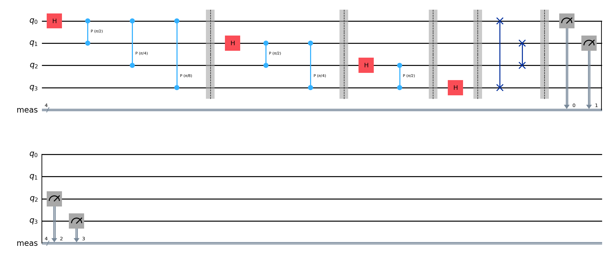
Similarly 2-bit Fourier transformational circuit can be get as follows.
We are going to verify the result in exercise 5.1 that we got earlier.
\(|\psi_1 \rangle =|00\rangle =\begin{pmatrix}1\\0\\0\\0\end{pmatrix}\)
from qiskit import QuantumCircuit import numpy as np def controlled_rotation(qc, control, target, k): """ Adds a controlled rotation gate R_k to the quantum circuit. Parameters: qc (QuantumCircuit): The quantum circuit to which the gate is applied. control (int): The control qubit index. target (int): The target qubit index. k (int): The exponent determining the angle of rotation (2π / 2^k). """ # Calculate the rotation angle (2π divided by 2^k) angle = 2 * np.pi / (2 ** k) # Apply the controlled-phase gate (controlled-R_k) qc.cp(angle, control, target) # Create a 2-qubit quantum circuit (for |00⟩) qcF = QuantumCircuit(2) # No need to initialize; the default state is |00⟩ in Qiskit # Apply a Hadamard gate to qubit 0 to create a superposition qcF.h(0) # Hadamard gate on qubit 0 # Apply controlled rotations with qubit 0 as the target controlled_rotation(qcF, control=1, target=0, k=2) # Controlled R_2 gate qcF.barrier() # Add a barrier to separate different sections of the circuit # Apply a Hadamard gate to qubit 1 qcF.h(1) # Hadamard gate on qubit 1 qcF.barrier() # Barrier after operations on qubit 1 # Swap qubits to reverse the order (commonly done in quantum algorithms like QFT) qcF.swap(0, 1) # Measure all qubits qcF.measure_all() # Print the quantum circuit print(qcF) # Draw the quantum circuit diagram (requires 'matplotlib' to be installed) qcF.draw(output='mpl')Output:
┌───┐ ░ ░ ░ ┌─┐ q_0: ┤ H ├─■────────░───────░──X──░─┤M├─── └───┘ │P(π/2) ░ ┌───┐ ░ │ ░ └╥┘┌─┐ q_1: ──────■────────░─┤ H ├─░──X──░──╫─┤M├ ░ └───┘ ░ ░ ║ └╥┘ meas: 2/════════════════════════════════╩══╩═ 0 1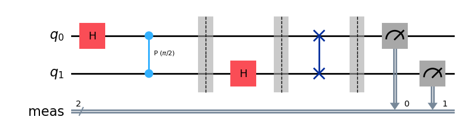
# Importing necessary packages to simulate results from qiskit import transpile from qiskit_aer import AerSimulator backend = AerSimulator() transpiled_qcF = transpile(qcF, backend) job = backend.run(transpiled_qcF, shots=10000) # Shots: Numbers of times the algorithm is run and measured counts = job.result().get_counts() print(counts) from qiskit.visualization import plot_histogram plot_histogram(counts)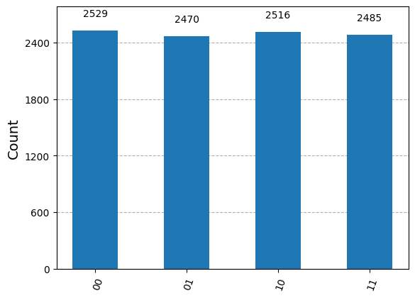
\(|\psi_2 \rangle =|01\rangle =\begin{pmatrix}0\\1\\0\\0\end{pmatrix}\)
from qiskit import QuantumCircuit import numpy as np def controlled_rotation(qc, control, target, k): """ Adds a controlled rotation gate R_k to the quantum circuit. Parameters: qc (QuantumCircuit): The quantum circuit to which the gate is applied. control (int): The control qubit index. target (int): The target qubit index. k (int): The exponent determining the angle of rotation (2π / 2^k). """ # Calculate the rotation angle (2π divided by 2^k) angle = 2 * np.pi / (2 ** k) # Apply the controlled-phase gate (controlled-R_k) qc.cp(angle, control, target) # Create a 2-qubit quantum circuit qcF = QuantumCircuit(2) qcF.initialize([0,1,0,0],[0,1]) # (for |01>=(1,0,0,0)^T) # Apply a Hadamard gate to qubit 0 to create a superposition qcF.h(0) # Hadamard gate on qubit 0 # Apply controlled rotations with qubit 0 as the target controlled_rotation(qcF, control=1, target=0, k=2) # Controlled R_2 gate qcF.barrier() # Add a barrier to separate different sections of the circuit # Apply a Hadamard gate to qubit 1 qcF.h(1) # Hadamard gate on qubit 1 qcF.barrier() # Barrier after operations on qubit 1 # Swap qubits to reverse the order (commonly done in quantum algorithms like QFT) qcF.swap(0, 1) # Measure all qubits qcF.measure_all() # Print the quantum circuit print(qcF) # Draw the quantum circuit diagram (requires 'matplotlib' to be installed) qcF.draw(output='mpl')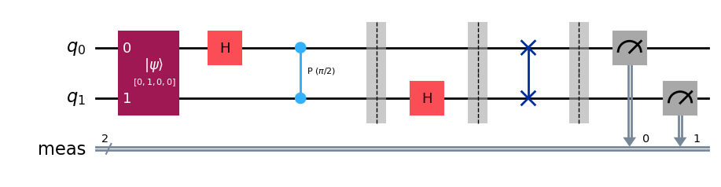
# Importing necessary packages to simulate results from qiskit import transpile from qiskit_aer import AerSimulator backend = AerSimulator() transpiled_qcF = transpile(qcF, backend) job = backend.run(transpiled_qcF, shots=10000) # Shots: Numbers of times the algorithm is run and measured counts = job.result().get_counts() print(counts) from qiskit.visualization import plot_histogram plot_histogram(counts)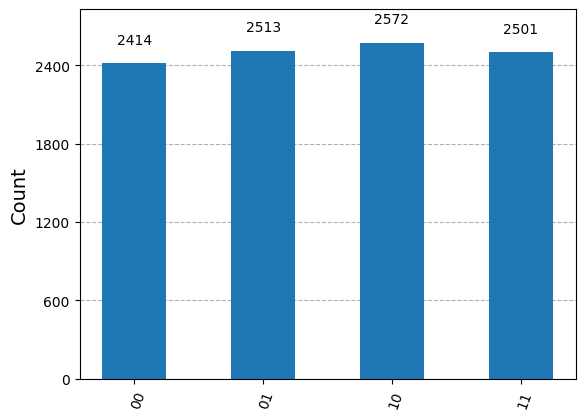
\(|\psi_3 \rangle =\frac{1}{2}\big(|00\rangle+|01\rangle+|10\rangle+|11\rangle\big) =\frac{1}{2}\begin{pmatrix}1\\1\\1\\1\end{pmatrix}\)
from qiskit import QuantumCircuit import numpy as np def controlled_rotation(qc, control, target, k): """ Adds a controlled rotation gate R_k to the quantum circuit. Parameters: qc (QuantumCircuit): The quantum circuit to which the gate is applied. control (int): The control qubit index. target (int): The target qubit index. k (int): The exponent determining the angle of rotation (2π / 2^k). """ # Calculate the rotation angle (2π divided by 2^k) angle = 2 * np.pi / (2 ** k) # Apply the controlled-phase gate (controlled-R_k) qc.cp(angle, control, target) # Create a 2-qubit quantum circuit qcF = QuantumCircuit(2) qcF.initialize([0.5,0.5,0.5,0.5],[0,1]) (for 1/2(|00⟩+|01⟩+|10⟩+|11⟩=1/2(1,1,1,1)^T)) # Apply a Hadamard gate to qubit 0 to create a superposition qcF.h(0) # Hadamard gate on qubit 0 # Apply controlled rotations with qubit 0 as the target controlled_rotation(qcF, control=1, target=0, k=2) # Controlled R_2 gate qcF.barrier() # Add a barrier to separate different sections of the circuit # Apply a Hadamard gate to qubit 1 qcF.h(1) # Hadamard gate on qubit 1 qcF.barrier() # Barrier after operations on qubit 1 # Swap qubits to reverse the order (commonly done in quantum algorithms like QFT) qcF.swap(0, 1) # Measure all qubits qcF.measure_all() # Print the quantum circuit print(qcF) # Draw the quantum circuit diagram (requires 'matplotlib' to be installed) qcF.draw(output='mpl')Output
┌──────────────────────────────┐┌───┐ ░ ░ ░ ┌─┐ q_0: ┤0 ├┤ H ├─■────────░───────░──X──░─┤M├─── │ Initialize(0.5,0.5,0.5,0.5) │└───┘ │P(π/2) ░ ┌───┐ ░ │ ░ └╥┘┌─┐ q_1: ┤1 ├──────■────────░─┤ H ├─░──X──░──╫─┤M├ └──────────────────────────────┘ ░ └───┘ ░ ░ ║ └╥┘ meas: 2/════════════════════════════════════════════════════════════════╩══╩═ 0 1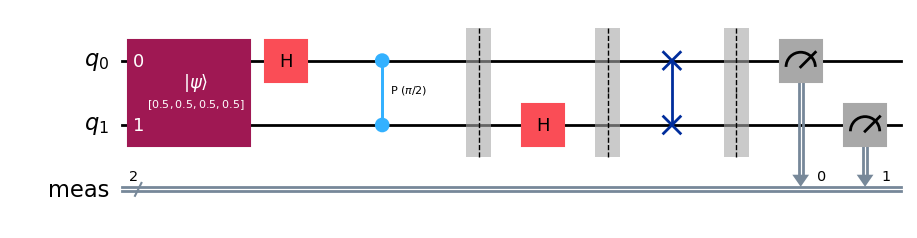
# Importing necessary packages to simulate results from qiskit import transpile from qiskit_aer import AerSimulator backend = AerSimulator() transpiled_qcF = transpile(qcF, backend) job = backend.run(transpiled_qcF, shots=10000) # Shots: Numbers of times the algorithm is run and measured counts = job.result().get_counts() print(counts) from qiskit.visualization import plot_histogram plot_histogram(counts)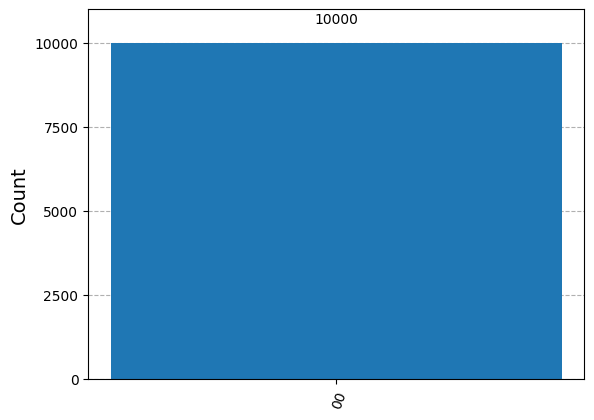